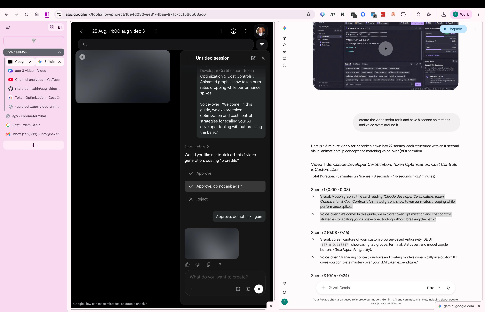

End-to-end production operating system for creating high-impact 3-minute animated educational videos (22 scenes × 8 seconds = 176s). From Skool research and Gemini 8s prompt engineering to Google Flow generation, Canva 3-section timeline assembly, Azure Files cloud state persistence, and multi-channel audience funneling.
Extract source material, capture subject research pictures, and define signature stylistic elements.
Blend real terminal & IDE screen captures (127.0.0.1:3847) with dynamic, expressive 3D cartoon/motion-graphic overlays to make complex technical concepts deeply engaging.
Recorded in your own voice: crisp, authoritative, energetic cadence with steady ~18-22 words per 8-second window.
Transform raw subject matter into a rigorous 22-scene pacing framework with synchronized visual concepts and VO.
8 seconds is the optimal attention window for social algorithms (YouTube Shorts, LinkedIn, X, Reels) while maintaining clear technical substance.
Average speech speed is ~2.5 words per second. An 8-second block holds 18–22 words with natural breathing room.
Each scene functions as an independent micro-hook, allowing seamless rearrangement or repurposing into standalone clips.
Real-time side-by-side production setup: Gemini (Script Engine) paired with Google Flow (Video Render Engine).

The user provides research screenshots of the Antigravity CLI IDE (127.0.0.1:3847) and telemetry dashboard. Gemini acts as the Director, outputting the structured 22-scene × 8-second visual concepts and synchronized voice-over script.
Operating project 25 Aug, 14:00 aug video 3 in the FlyWheelMVP tab group. The visual prompt from Scene 1 is fed into Flow to generate the first 8-second motion graphic slice.
Each 8-second generation costs 15 credits. The dialog prompts: "Would you like me to kick off this 1 video generation, costing 15 credits?" Selecting "Approve, do not ask again" enables high-speed batch generation.
Integrated multi-tab workstation keeping Skool classroom, YouTube analytics, GitHub repository, and Antigravity CLI terminal immediately accessible for instant asset referencing.
Generate 8-second motion graphic visual clips for each scene using Google Flow & Veo prompt templates.
Copy individual visual prompts from the Storyboard section or copy all 22 Google Flow prompts in a single batch file.
Critical analysis, failure point mitigation, credit cost accounting, and pre-flight quality verification.
Calculate total Google Flow credit consumption including buffer for scene regenerations and retakes.
| Risk Dimension | Failure Mode / Pitfall | Severity | Mitigation Strategy |
|---|---|---|---|
| 🔤 Text Hallucination | AI video models distort numbers like 127.0.0.1:3847 or exact code keywords. |
High Risk | Golden Rule: Never render fine code in Google Flow. Use real screen captures for UI/terminal and use Flow for abstract 3D visual metaphors. |
| 🎨 Style Drift | Clips generate with wildly differing art styles (e.g. flat 2D vs photo CGI vs neon cyberpunk). | High Risk | Prefix every prompt with a standard Style Anchor: "Isometric 3D dark-mode UI aesthetic, cyber-blue and emerald palette, 60fps..." |
| ⏱️ Audio Pacing Desync | Voice narration for an 8s scene exceeds 8.5s, pushing the timeline out of sync in Canva. | Medium | Enforce 18–22 words per VO line. Rehearse with the built-in 8s Teleprompter Studio before locking video cuts. |
| 🪙 Credit Budget Exhaustion | Blindly clicking "Approve, do not ask again" on multiple failed prompt iterations burns 500+ credits. | Medium | Test 1 representative prompt first. Once style is locked, generate in batches of 4-5 scenes. |
| 🎭 Lack of Creator Identity | Pure stock AI video feels detached, impersonal, and easily forgotten by viewers. | Low | Incorporate your own voice + Roger Rabbit signature stamp (cartoon over real IDE) to build recognizable brand equity. |
Organize project timeline into Pre-Prod, Prod, and Post-Prod with real-time state synchronization to Azure Files.
animationasistant/aug-video-state/aug_video_animation_state.json
dp-kv-deliverypilot (Secret: aug-video-animation-sas) • Auto-sync active
Digital Post-it notes containing the voice-over and scene concept for each 8s timestamp. Click any note to copy!
Upload Google Flow generated 8s MP4 clips into the Canva timeline, aligned with the 8-second grid.
Record voice-over in your own voice, add Roger Rabbit signature overlay, background audio, and export.
Paced rehearsal loop with 8-second countdown timer, speech audio cue, and scene auto-advancing.
Distribute the 3-minute video freely across YouTube, LinkedIn, X, and Skool to drive developer engagement into structured value tiers.
Full video description with 22 chapter timestamps matching 8-second scene boundaries.
High-engagement professional breakdown summarizing the 5 token optimization pillars.
Rapid-fire 5-tweet thread summarizing model routing and linking to the Skool community.
Download synchronized .SRT caption file for YouTube, LinkedIn, and Canva uploads.
Complete scene-by-scene script, visual directions, Google Flow generation prompts, and VO audio controls.
Export the full project in multiple formats for archiving, pairing, or importing into external tools.